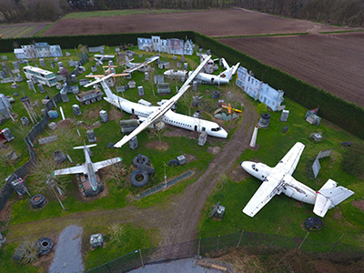
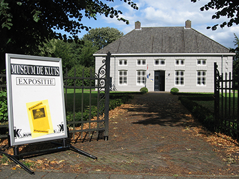

Boekel gastvrij en actief
Leuke feitjes
- Boekel heeft 11.030 inwoners. en als dit langer is dan is dit het effect.
- Er wonen 4.297 huishoudens.
- Dit zijn 560 adressen per Km2.
- Boekel bestaat 709 jaar.
- Boekel is nog steeds een zelfstandige gemenete.
Bezoek eens een leuke artactie in Boekel
Paintbal
Misschien wel het mooiste paintball park van Nederland. Met 4 verschillende thema velden zijn wij onderscheidend. Waan jezelf door verschillende gebieden zoals Vietnam, Lockdown, Airplane Grave Yard of Call of Duty Shipment. Het veld bestaat in totaal uit 20 zeecontainers, 2 auto’s, 3 grote afvalcontainers en verschillende olietonnen. Met maximaal acht personen kun jij dit veld bespelen. Het spel wat hier vaak gespeeld wordt is “Team Deathmatch”. Het zorgt voor hoge spanningen omdat de vijand snel bij je kan zijn. Een echte uitdaging dus!
Museum De Kluis
Bij Museum De Kluis ervaar je een reis door de
geschiedenis van de psychiatrie. In het oude klooster van de Broeders Penitenten op het terrein van Huize Padua bevindt zich Museum de Kluis, het Museum van
de psychiatrie. De geschiedenis van de Broeders, de psychiatrie en de ontwikkelingen tot GGZ instelling kun je in woord en beeld ervaren door middel van een
tijdlijn. Wat betekent het om psychisch ziek te zijn en hoe kan iemand worden behandeld? In Museum de Kluis vind je het antwoord.